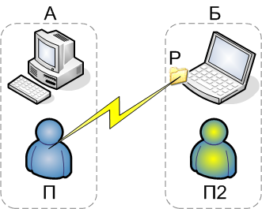

Если есть два компьютера А и Б, на компьютере А есть локальный (не доменный) пользователь П и на компьютере Б есть ресурс Р, то, чтобы предоставить пользователю П доступ к ресурсу Р, нужно:
После выполнения этих действий, пользователь П с компьютера А будет иметь необходимый доступ к ресурсу Р на компьютере Б.